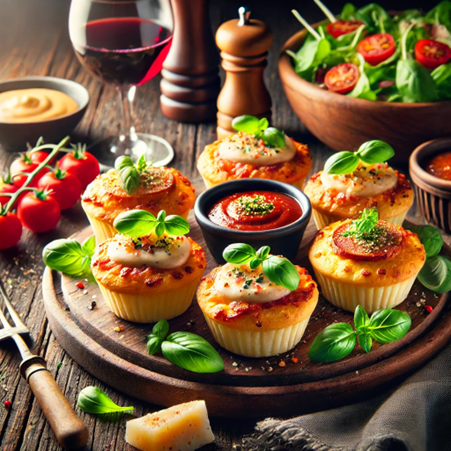

Perfect Pairings: What to Serve with The Pizza Cupcake
Pairing The Pizza Cupcake with the right sides and beverages enhances its flavors and creates a more complete meal. Here are some fantastic options:
- Wine: Pinot Noir (Margherita), Cabernet Sauvignon (Pepperoni)
- Beer: Crisp lager or bold IPA
- Non-Alcoholic: Lemonade, sparkling water, classic cola
- Sides: Arugula salad, roasted veggies, garlic butter or spicy ranch dips
Creative Pizza Cupcake Meal Ideas
- Snack Platter: Mix different cupcake flavors with olives, cheese, and dips
- Lunchbox Combo: Add fruit, yogurt, and marinara for a fun, balanced meal
- Party Tray: Pair with garlic knots, sliders, or mozzarella sticks for game night
Pro Tips to Make Pizza Cupcakes Even Better
- Reheat Right: 350°F oven for 10–12 mins or air fryer for 2–3 mins
- Customize: Top with chili flakes, fresh basil, truffle oil, or honey drizzle
- Storage: Refrigerate 3 days max or freeze for 3 months
Hosting the Ultimate Pizza Cupcake Night
- Movie Night: Pair cupcakes with popcorn, candy, and soft drinks
- Pizza Bar: Let guests choose toppings and sauces
- Kids’ Party: Add themed decor, mini flags, and fun dips
